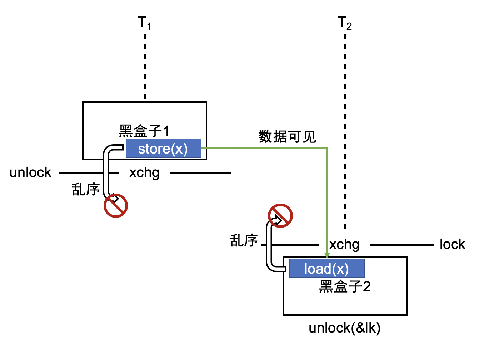

<html>
  <Head>
<meta http-equiv="Content-Type" content="text/html; charset=utf-8">

    
<link rel="stylesheet" href="../static/css/bootstrap.min.css"/>
<link rel="stylesheet" href="../static/css/bootstrap-theme.min.css"/>


    <link rel="stylesheet" href="../static/css/fonts/crmison.css"/>
    <link rel="stylesheet" href="../static/css/fonts/fira_code.css"/>
    <link rel="stylesheet" href="../static/css/fonts/ptsans.css"/>
    <link rel="stylesheet" href="../static/css/katex.min.css"/>
    <link rel="stylesheet" href="../static/css/wiki.css"/>
    <link rel="stylesheet" href="../static/css/codehilite.css"/>

    <script src="../static/js/jquery.min.js"></script>
    <script src="../static/js/bootstrap.bundle.min.js"></script>
    <script src="../static/js/katex.min.js"></script>
    
    

    <title>并发控制 (1): 互斥</title>
  </Head>
  <body>
   
   
<nav class="navbar fixed-top navbar-expand-lg navbar-dark bg-dark">
  <a class="navbar-barnd" href="index.html">Yanyan's Wiki</a>
  <div class="collapse navbar-collapse">
    <div class="navbar-nav">
      <a class="nav-item nav-link active" href="OS2020.html">
        
        操作系统 (2020)</a>
      <a class="nav-item nav-link active" href="SysLab2020.html">
        计算机系统综合实验 (2020)</a>
      <a class="nav-item nav-link active" href="ICS_NJU.html"> 加入我们</a>
    </div>
    <form class="form-inline" autocomplete="off">
      <input id="token-input" type="text" oninput="login();" maxlength="16"
        data-toggle="tooltip" data-placement="bottom"
        title="用于确定身份的作业提交 SHA-1 hash digest。更改后回车或刷新网页生效"></input>
    </form>
  </div>
</nav>

<center>
  <div class="article-container">
    <div class="article">
      <h1 id="1">并发控制 (1): 互斥</h1>
<div markdown="1"><div class="fenced fenced-blue"><div>
<h4 id="_1">本讲阅读材料</h4>
<p><a href="http://pages.cs.wisc.edu/~remzi/OSTEP/">教科书 (Operating Systems: Three Easy Pieces, OSTEP)</a> 第 28 章。课后小练习：</p>
<ul>
<li>在 <code>threads.h</code> 上，使用 <a href="https://github.com/remzi-arpacidusseau/ostep-code/tree/master/threads-locks"><code>compare-and-swap</code> (x86 提供的 <code>cmpxchg</code> 指令)</a> 实现自旋锁替换 <a href="../static/wiki/os/2020/demos/sum.c"><code>spinlock.c</code></a> 中锁的实现并测试。</li>
</ul>
</div></div></div>

<h2 id="_1">“互斥” 的含义</h2>
<h3 id="_2">互斥的直观解释</h3>
<p>为了控制并发性，防止我们不想并发的代码并发，例如防止以下代码在并发执行的时候发生 “金钱溢出”：</p>
<div class="codehilite"><pre><span></span><span class="kt">int</span> <span class="nf">pay</span><span class="p">(</span><span class="kt">unsigned</span> <span class="kt">int</span> <span class="n">money</span><span class="p">)</span> <span class="p">{</span>
  <span class="k">if</span> <span class="p">(</span><span class="n">deposit</span> <span class="o">&gt;=</span> <span class="n">money</span><span class="p">)</span> <span class="p">{</span>
    <span class="n">deposit</span> <span class="o">-=</span> <span class="n">money</span><span class="p">;</span>
    <span class="k">return</span> <span class="n">SUCCESS</span><span class="p">;</span>
  <span class="p">}</span> <span class="k">else</span> <span class="p">{</span>
    <span class="k">return</span> <span class="n">FAIL</span><span class="p">;</span>
  <span class="p">}</span>
<span class="p">}</span>
</pre></div>


<p>我们希望能设计一组能够 “阻止并发” 的 API:</p>
<div class="codehilite"><pre><span></span><span class="k">typedef</span> <span class="k">struct</span> <span class="p">{</span>
  <span class="p">...</span>
<span class="p">}</span> <span class="n">lock_t</span><span class="p">;</span>
<span class="kt">void</span> <span class="nf">lock</span><span class="p">(</span><span class="n">lock_t</span> <span class="o">*</span><span class="n">lk</span><span class="p">);</span>   <span class="c1">// 试图获得锁的独占访问，成功获得后返回</span>
<span class="kt">void</span> <span class="nf">unlock</span><span class="p">(</span><span class="n">lock_t</span> <span class="o">*</span><span class="n">lk</span><span class="p">);</span> <span class="c1">// 释放锁的独占访问</span>
</pre></div>


<p>共享内存中的 <code>lock_t</code> 是一个 “锁对象”，类似于厕所里的 “包间”——一旦我们 (线程) 进入，其他人就不得再进入。更恰当的比方 (系统中可以有很多锁对象) 是每一把锁都是系统中唯一的一份 “许可”。当有多个人 (先后或同时) 想要获得许可时，只有一个人能得到它，得到的人可以继续，而其他想要许可的人则必须等待，直到得到许可的人将许可归还。</p>
<p>使用互斥锁，我们可以改写 <code>pay</code>:</p>
<div class="codehilite"><pre><span></span><span class="kt">int</span> <span class="nf">pay</span><span class="p">(</span><span class="kt">unsigned</span> <span class="kt">int</span> <span class="n">money</span><span class="p">)</span> <span class="p">{</span>
  <span class="kt">int</span> <span class="n">ret</span><span class="p">;</span>
  <span class="n">lock</span><span class="p">(</span><span class="o">&</span><span class="n">pay_lock</span><span class="p">);</span>
  <span class="k">if</span> <span class="p">(</span><span class="n">deposit</span> <span class="o">&gt;=</span> <span class="n">money</span><span class="p">)</span> <span class="p">{</span>
    <span class="n">deposit</span> <span class="o">-=</span> <span class="n">money</span><span class="p">;</span>
    <span class="n">ret</span> <span class="o">=</span> <span class="n">SUCCESS</span><span class="p">;</span>
  <span class="p">}</span> <span class="k">else</span> <span class="p">{</span>
    <span class="n">ret</span> <span class="o">=</span> <span class="n">FAIL</span><span class="p">;</span>
  <span class="p">}</span>
  <span class="n">unlock</span><span class="p">(</span><span class="o">&</span><span class="n">play_lock</span><span class="p">);</span>
  <span class="k">return</span> <span class="n">ret</span><span class="p">;</span>
<span class="p">}</span>
</pre></div>


<p>使 “判断余额” 和 “扣减余额” 被保护起来，不能并发。</p>
<p>更严谨地说，对于一个锁对象，在任何可能的线程调度下，若某个线程持有锁 (<code>lock(lk)</code> 返回且未释放)，则任何其他线程的 <code>lock(lk)</code> 都不能返回。从状态机的视角，假设系统每次选择一个线程执行一条指令 (虽然这个假设并不严格成立)，我们认为 <code>lock(lk)</code> 返回时，线程就进入了 “持有 <code>lk</code>” 的状态。而从初始状态开始，不存在任何状态机的执行路径，使得两个线程同时持有 <code>lk</code>。</p>
<h3 id="_3">实现互斥的挑战</h3>
<p>回顾之前我们反复提到的例子：</p>
<div class="codehilite"><pre><span></span><span class="kt">int</span> <span class="n">x</span> <span class="o">=</span> <span class="mi">0</span><span class="p">,</span> <span class="n">y</span> <span class="o">=</span> <span class="mi">0</span><span class="p">;</span>

<span class="kt">void</span> <span class="nf">thread1</span><span class="p">()</span> <span class="p">{</span>
  <span class="n">store</span><span class="p">(</span><span class="n">x</span><span class="p">,</span> <span class="mi">1</span><span class="p">);</span>
  <span class="n">t</span> <span class="o">=</span> <span class="n">load</span><span class="p">(</span><span class="n">y</span><span class="p">);</span>
  <span class="n">printf</span><span class="p">(</span><span class="s">"y = %d</span><span class="se">\n</span><span class="s">"</span><span class="p">,</span> <span class="n">t</span><span class="p">);</span>
<span class="p">}</span>

<span class="kt">void</span> <span class="nf">thread2</span><span class="p">()</span> <span class="p">{</span>
  <span class="n">store</span><span class="p">(</span><span class="n">y</span><span class="p">,</span> <span class="mi">1</span><span class="p">);</span>
  <span class="n">t</span> <span class="o">=</span> <span class="n">load</span><span class="p">(</span><span class="n">x</span><span class="p">);</span>
  <span class="n">printf</span><span class="p">(</span><span class="s">"x = %d</span><span class="se">\n</span><span class="s">"</span><span class="p">,</span> <span class="n">t</span><span class="p">);</span>
<span class="p">}</span>
<span class="c1">// Got: x = 0, y = 0</span>
</pre></div>


<p>由于现代处理器比我们想象中要复杂，一个处理器上的写操作可能被缓存在本地而其他处理器不可见，加上处理器中指令执行的乱序，导致了甚至单条指令顺序、原子性、可见性的丧失。下图是符合 x86 处理器实际行为的一个模型 (有兴趣的同学可以参考 x86-TSO 的论文 “<a href="https://cacm.acm.org/magazines/2010/7/95048-x86-tso-a-rigorous-and-usable-programmers-model-for-x86-multiprocessors/fulltext">x86-TSO: A rigorous and ­usable programmer's model for x86 multiprocessors</a>”)：</p>
<p></img></p>
<p>从状态机的视角，这意味着<span class="red">我们不再能假设状态机模型上的每一步是选择一个线程执行一条指令</span>。我们分析并发程序最基础的工具也随之失效。因此，我们对互斥锁 (lock/unlock) 的额外期望是能救回多处理器共享内存程序上的原子性、顺序和可见性 (当然是依靠硬件提供的机制实现)。</p>
<p>实际上，我们希望 lock/unlock 保护的区域是一个不可分割的 “黑盒子”。阻止黑盒子并发意味着程序中所有的黑盒子都能排出一个顺序，如下图所示，两个黑盒子 (<math class="inline-math">B_1</math> 和 <math class="inline-math">B_2</math>) 要么按照 <math class="inline-math">B_1 \to B_2</math> 的顺序执行，要么按照 <math class="inline-math">B_2 \to B_1</math> 执行。这满足了我们 “原子性” 的要求。</p>
<p></img></p>
<p>除此之外，我们还额外地要求</p>
<ul>
<li>黑盒子中对共享内存的乱序读写不能越过 <code>lock</code>/<code>unlock</code> 的边界，这限制了实际处理器执行指令时的乱序行为只能在黑盒子 (同一个线程) 中发生。</li>
<li>如果两个黑盒子按照 <math class="inline-math">B_1 \to B_2</math> 的顺序执行，那么 <math class="inline-math">B_1</math> 中所有的写操作，都必须在 <math class="inline-math">B_2</math> 中可见，反之亦然。这保证了黑盒子之间共享内存访问的可见性。</li>
</ul>
<div markdown="1"><div class="fenced fenced-blue"><div>
<h4 id="_1">所以……</h4>
<p>阻止 “指令执行的乱序” 和 “确保指令效果的可见性” 这两件事在 “共享内存” 的状态机模型中压根就没有定义过啊！没错。在现代多处理器系统上，纯粹地使用 load/store 指令实现互斥是 (理论上) 不可能的。</p>
<p>我们必须借助硬件提供的，能够 “阻止指令乱序”、“确保指令效果可见” 的指令实现互斥。</p>
</div></div></div>

<p>因此，被同一个互斥锁保护的所有代码，一定能在全局 (上帝视角) 上排出一个执行顺序 <math class="inline-math">B_1 \to B_2 \to \ldots \to B_n</math>。能够排序意味着 “状态机模型” 对互斥锁保护的代码依然成立：</p>
<ul>
<li>同一个黑盒子 (<math class="inline-math">B</math>) 中的代码属于同一个线程，单线程程序可以假设指令按顺序执行。</li>
<li>虽然 <math class="inline-math">B_i, B_{i+1}</math> 可能运行在不同的处理器上，但 <math class="inline-math">B_i</math> 中的 unlock 和 <math class="inline-math">B_{i+1}</math> 中的 lock 保证了指令执行的顺序和可见性。</li>
</ul>
<h2 id="_4">原子指令</h2>
<p>请大家阅读教科书 28 章关于原子指令以及如何用原子指令实现互斥锁。我们在这里要补充的是，原子指令不仅能阻止指令乱序，还可以确保指令的效果在多处理器之间可见。</p>
<p></img></p>
<p>对于黑盒子执行的顺序 <math class="inline-math">B_1 \to B_2</math>，假设 <math class="inline-math">B_1</math> 中有对 <code>x</code> 的写，<math>B_2</math> 中有对 <code>x</code> 的读：</p>
<ul>
<li><math class="inline-math">B_1</math> 中，<code>store(x)</code> 可能被乱序执行，但不能越过 <code>unlock</code> 中的 <code>xchg</code>；</li>
<li><math class="inline-math">B_2</math> 中，<code>load(x)</code> 可能被乱序执行，但不能越过 <code>lock</code> 中的 <code>xchg</code>；</li>
<li>在 <math class="inline-math">B_1</math> 中 <code>unlock</code> 中的 <code>xchg</code> 完成前，保证所有的数值到达内存，因此 <math>B_2</math> 的 <code>lock</code> 之后的 <code>load(x)</code> 能确保读到 <math>B_1</math> 中写入的数值。</li>
</ul>
<h2 id="_5">数据竞争</h2>
<h3 id="_6">数据竞争：直观解释</h3>
<p>非正式地说，数据竞争就是两个可以 “<span class="red">同时发生</span>” 的共享内存访问，其中：</p>
<ol>
<li>它们位于不同的线程；</li>
<li>它们访问了同一个内存地址；</li>
<li>它们中至少有一个是写，也就是有 load/store, store/load, store/store 三种类型的 “数据竞争”。</li>
</ol>
<div markdown="1"><div class="fenced fenced-green"><div>
<h4 id="load-load">思考题：为什么 load-load 不是数据竞争？</h4>
<p>似乎两个线程读同时读共享内存并不会引起很糟的后果……</p>
</div></div></div>

<p>所谓 “竞争”，两个可以同时发生的共享内存访问可能发生 “赛跑”：</p>
<div class="codehilite"><pre><span></span><span class="c1">// x = 0;</span>
<span class="kt">void</span> <span class="nf">thread1</span><span class="p">()</span> <span class="p">{</span>
  <span class="n">t</span> <span class="o">=</span> <span class="n">load</span><span class="p">(</span><span class="n">x</span><span class="p">);</span>
<span class="p">}</span>
<span class="kt">void</span> <span class="nf">thread2</span><span class="p">()</span> <span class="p">{</span>
  <span class="n">store</span><span class="p">(</span><span class="n">x</span><span class="p">,</span> <span class="mi">1</span><span class="p">);</span>
<span class="p">}</span>
</pre></div>


<p>根据两个线程共享内存访问 “向前跑” 的速度，跑得快的访问将先被执行。因此：</p>
<ul>
<li>按照 <math class="inline-math">T_1 \to T_2</math> 的顺序执行，load 将会得到 <math class="inline-math">t = 0</math>，</li>
<li>按照 <math class="inline-math">T_2 \to T_1</math> 的顺序执行，load 将会得到 <math class="inline-math">t = 1</math>。</li>
</ul>
<p></img></p>
<p>通常，我们的程序中都不会只进行一次内存访问，而是：</p>
<div class="codehilite"><pre><span></span><span class="kt">void</span> <span class="nf">pay</span><span class="p">(</span><span class="kt">unsigned</span> <span class="kt">int</span> <span class="n">money</span><span class="p">)</span> <span class="p">{</span>
  <span class="n">t</span> <span class="o">=</span> <span class="n">load</span><span class="p">(</span><span class="n">deposit</span><span class="p">);</span>
  <span class="k">if</span> <span class="p">(</span><span class="n">t</span> <span class="o">&gt;=</span> <span class="n">money</span><span class="p">)</span> <span class="p">{</span>
    <span class="p">...</span>
</pre></div>


<p>也就是一段代码可能被打断并存在 “多种运行结果”，加上处理器可能乱序执行内存访问，数据竞争的后果是非常危险的。</p>
<div markdown="1"><div class="fenced fenced-red"><div>
<h4 id="ub">简而言之，数据竞争 = UB</h4>
<p>我们不妨把数据竞争定义成 undefined behavior，程序一旦出现数据竞争，之后 “发生任何事” 都被认为是可能的。数据竞争在本学期的编程中绝对禁止。很快你们就会在操作系统实验中遇到数据竞争引发的致命 bug——然后就会体会到这个定义的良苦用心。</p>
</div></div></div>

<h3 id="_7">什么可以阻止两个内存访问不同时发生？</h3>
<p>答案是原子指令。假设我们正确实现了 lock/unlock，lock/unlock 之间的 “黑盒子” 就必须被串行化，不能并发。考虑两个黑盒子中对 <code>x</code> 的内存访问：</p>
<p></img></p>
<p>假设 <math class="inline-math">B_1\to B_2</math> 是实际程序的执行顺序，那么：</p>
<p><span class="center"><math class="inline-math">B_1</math> (store) <math class="inline-math">\to</math> unlock <math class="inline-math">\to</math> lock <math class="inline-math">\to</math> <math class="inline-math">B_2</math> (load)</span></p>
<p>就是唯一可能的执行顺序，对 <code>x</code> 的内存访问无法同时发生，因此在 <code>x</code> 上无法发生数据竞争。</p>
    </div>
  </div>
</center>

<div class="footer-bottom">
  <center>
    <div class="copyright"> © 2020 Yanyan Jiang, All rights reserved </div>
  </center>
</div>


    <script>
      $(function () {
        $('[data-toggle="tooltip"]').tooltip()
      })

      $("math").each(function() {
        var tex = $(this).text();
        var html = katex.renderToString(tex, {
          displayMode: $(this).attr('class') == 'block-math',
          throwOnError: false
        });
        $(this).replaceWith(html);
      });

      function get_token() {
        var match = document.cookie.match(new RegExp('(^| )token=([^;]+)'));
        if (match) return match[2];
        else return "";
      }

      var token = get_token();
      var hint = "token", box = $("#token-input");

      if (token == "") { box.val(hint); }
      else { box.val(token); }

      function login() {
        var token = box.val()
        document.cookie = 'token=' + token + '; expires=Fri, 31 Dec 9999 23:59:59 GMT;';
        if (token == '') {
          box.val(hint);
        }
      }
    </script>
  </body>
</html>